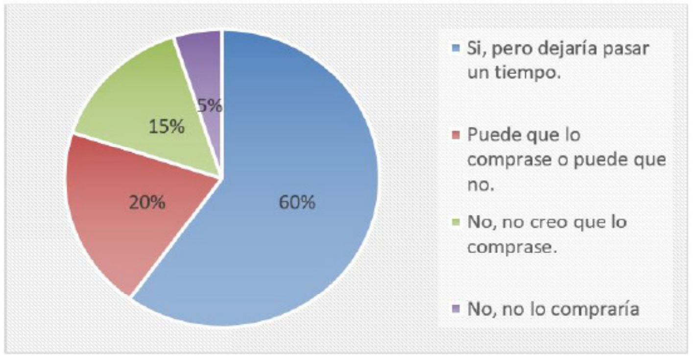

Planes de marketing en las pymes
sector calzado de la ciudad de Cúcuta
Marketing plans in the footwear sector SMEs of the
city of Cúcuta
Luis Alfredo Bustamante-Díaz
Estudiante de negocios. la_bustamante@fesc.edu.co
Fundación de Estudios Superiores Comfanorte, Cúcuta,
Colombia
Darly Karolayn Díaz-Machuca
Estudiante de negocios. Fundación de Estudios Superiores
Comfanorte, Cúcuta, Colombia
Wilker David Pinzón-Ayala
Especialista Gestión Pública, gp_a_aro@fesc.edu.co
Fundación de Estudios Superiores Comfanorte - Fesc, Cúcuta,
Colombia
Nathaly Melissa Zambrano-Martínez
Estudiante de negocios. Fundación de Estudios Superiores
Comfanorte, Cúcuta, Colombia
Maria de los Angeles Barrientos-Rosales
Estudiante de Financiara, est_ma_barrientos@fesc.edu.co
Fundación de Estudios Superiores Comfanorte, Cúcuta,
Colombia
*Autor de correspondencia: est_ma_barrientos@fesc.edu.co
© Los autores. Editado por la Universidad Francisco de Paula Santander.
This is an article under the license CC
BY-NC 4.0.

Recibido: Febrero 12 de 20120
Aceptado: Mayo 15 de 2020
Como citar: L.A. Bustamante-Díaz, D.K. Díaz-Machuca, W.D. Pinzón-Ayala, N.M.
ZambranoMartínez, M. de los Angeles Barrientos-Rosales, ”Planes de marketing en las pymes sector calzado
de la ciudad de Cúcuta”. Reflexiones contables (Cúcuta), vol. 3, no. 2, 8-19.
Palabras Clave:
Marketing, Pymes, fabricas,
Planificación.
Resumen
El propósito de este trabajo fue conocer como
manejan los planes de marketing las empresas
del calzado en la ciudad de Cúcuta, esto por
cuanto las bondades que brinda el marketing
es fundamental para la competitividad de la
organización y así la de su desarrollo, con esto
se tiene que la utilización de estas herramientas
de publicidad fomentan a una empresa a
elevar sus actividades y a darse a conocer en
los diferentes contextos para posicionarse,
y más el sector del calzado siendo un sector
importante en Norte de Santander que necesita
mejorar sus desempeños publicitarios. De la
misma manera esta investigación se realizó
bajo un enfoque cuantitativo ya que se aplicó
una encuesta en el sector para poder develar
de que manera era la utilización del marketing
en las pymes del sector.
Keywords:
Marketing, SMEs, factories,
Planning.
Abstract
The purpose of this work was to know how
footwear companies in the city of Cúcuta
handle the marketing plans, this because the
benefits that marketing offers is fundamental
for the competitiveness of the organization
and thus that of its development, with this The
use of these advertising tools has to encourage
a company to increase its activities and make
itself known in different contexts to position
itself, and more so the footwear sector is an
important sector in Norte de Santander that
needs to improve its advertising performance.
In the same way, this research was carried out
under a quantitative approach since a survey
was applied in the sector to be able to reveal
how the use of marketing was in SMEs in the
sector.
Introducción
Los microempresarios de la ciudad de Cúcuta
no cuentan con el conocimiento necesario
para desarrollar un plan de marketing,
incluso algunos creen que es innecesarios
realizar una inversión sobre este tema. El
principal motivo por el cual se debe realizar
un plan de marketing, es porque ayuda a la
consecución de los objetivos de la empresa,
que están relacionados con el mercado, como,
por ejemplo: captación de nuevos clientes,
creación de marca, fidelización de clientes,
aumento de la facturación o el incremento de
la participación en el mercado. En definitiva, el
plan de marketing, debería ser un documento
de obligada realización para todas las
empresas, donde el tamaño o el sector al que
pertenecen deberían dejar de ser excusas para
no realizarlo. (García 2018).
Los microempresarios de la ciudad de
Cúcuta se están viendo afectados en la parte
económica de sus empresas debido a la falta de
conocimiento o implementación de estrategias
que puedan aportar para el cumplimiento de
sus objetivos y metas trazadas. Por medio
del siguiente trabajo queremos dar a conocer
la importancia de implementar un Plan de
Marketing en microempresas debido a que es
una herramienta fundamental para alcanzar
los objetivos, permitiendo una preparación
informada que se puede aplicar tanto a nuevos
productos como al aumento de ventas de
productos existentes. (Marulanda 2018).
Por lo cual es necesario conocer y aplicar las
nuevas estrategias para que incrementen
sus ventas, brindando diferenciación en sus
productos y servicios, entre otros factores que
ayudaran a posicionar la marca en el mercado
y sean reconocidos.
Con estos interrogantes nos permitimos
analizar el uso e implementación del marketing
en microempresas de la ciudad de Cúcuta como mecanismo de impulso y fortalecimiento
de inversión en el sector. (Torres 2009).
Marketing es una palabra proveniente de la
lengua inglesa a pesar de esta intrínseca en
la cultura mundial. En inglés, market significa
merca y marketing puede ser traducido como
mercadotecnia o mercadeo, lo que es, en
últimas, un estudio de las causas, objetivos y
resultados que son generados a través de las
diferentes formas en cómo lidiamos con el
mercado.
“Marketing es la ciencia y el arte de explorar,
crear y entregar valor para satisfacer las
necesidades de un mercado objetivo con
lucro. El Marketing identifica necesidades y
deseos no realizados. Define, mide y cuantifica
el tamaño del mercado identificado y el lucro
potencial.” – Philip Kotler
Según la American Marketing Association,
la definición del término es la siguiente: “El
Marketing es una actividad, conjunto de
instituciones y procesos para crear, comunicar,
entregar y cambiar las ofertas que tengan valor
para los consumidores, clientes, asociados y
sociedades en general”. (Solano 2017).
Es decir, el Marketing es una serie de estrategias,
técnicas y prácticas que tienen como principal
objetivo, agregar valor a las determinadas
marcas o productos con el fin de atribuir
una importancia mayor para un determinado
público objetivo, los consumidores.
Se engaña quien cree que el Marketing tiene
solo como objetivo vender algo. Este concepto
se profundiza en todo lo que envuelve este
proceso, sea como la producción, logística,
comercialización y post venta del producto/
servicio.
Plan de Marrketing
El plan de marketing es un documento que
forma parte de la documentación de la
planificación estratégica de una empresa.
El plan de marketing sirve para recoger los
objetivos y estrategias, además de las acciones
que van a ser necesario realizar para conseguir
estos objetivos (kotler, 2000). Es la bitácora
mediante la cual la empresa establece que
Objetivos en términos comerciales quiere
alcanzar y que debe hacer para alcanzarlos.
• ¿Para qué nos sirve?
Conocer con certeza debilidades, fortalezas,
oportunidades y amenazas
Generar una disciplina en torno a la cultura de
planear y supervisar las actividades de
marketing de manera formal, sistemática y
permanente
Aclarar el pensamiento estratégico y definir
prioridades en la asignación de recursos.
Análisis del mercado
En este tema se empezará a describir teorías
correspondientes al mercado, los tipos de
mercados, segmentación de mercado “ sus
características, también se hará énfasis en
detallar teorías relacionada con la publicidad
de las empresas, los tipos de publicidad, los
medios publicitarios que debe utilizar la
Empresa. (Taquia 2015).
Concepto de mercado
Según Philip Kotler (1995: pag.462) Mercado “es
el conjunto de todos los compradores reales
potenciales de un producto o un servicio”.
Cada una las personas que buscan satisfacer
sus necesidades comprando X o Y producto/
servicio hacen parte de este conjunto, cada una
de estas personas están dispuesta hacer un
intercambio a cambio de lo que ellos quieren, el mercado oferente siempre dependerá de
la cantidad de personas que demande dicho
producto o servicio.
También mercado se puede definir de la
siguiente manera “Es el lugar donde se lleva
a cabo el intercambio entre vendedor “
comprador” (Llanos 2018), en este intercambio
los vendedores buscan que el usuario demande
cada vez más el servicio para que la empresa se
pueda posicionar cada vez más en el mercado
buscando siempre satisfacer las necesidades
del cliente, por lo cual ante elcreciente
aumento de los individuos que conforman
el mercado global, los gerentes deben tener
identificado su mercado meta hacia el cual
desean proyectarse por ende mercado meta,
de acuerdo con Ricardo Schlesinger, María
W., & Useche, María C. (2005). “ Es el conjunto
de personas hacia quienes va dirigidos todos
los esfuerzos de mercadotecnia, es decir el
que cumple con todas las características del
segmento del mercado”, que se desea cubrir
al cual como empresarios podemos satisfacer
sus demandas y necesidades.
Estrategias de marketing
Las estrategias de marketing se realizarán de
acuerdo con los objetivos planteados, lograr
que nuestros microempresarios del sector de
fabricación y distribución de calzado de una
parte de la ciudad, conozcan e identifiquen la
importancia de aplicar los planes de marketing,
debido a que es una gran oportunidad de
incrementar sus ventas, dar a conocer la marca
en la ciudad y obtener una buena rentabilidad.
(Barrientos 2019)
• Concepto de estrategia
Las estrategias son patrones o planes que
integra las principales metas “políticas de una
organización, “ a la vez, establece la secuencia
coherente de las acciones a realizar. Una
estrategia debidamente formulada ayuda a poner en orden “ asignar, con base tanto
en sus atributos como en sus deficiencias
internas, los recursos de una organización, con
el fin de lograr una situación viable” original,
así como anticipar los posibles cambios en
el entorno “ las acciones imprevistas de los
oponentes. (Alvares 2015).
Hipótesis de la investigación
Para esta investigación se postularon dos
hipótesis, las cuales siendo una que los
microempresarios de la ciudad no aplican
planes de marketing por falta de conocimiento
y de interés y también que que no aplican
las estrategias y herramientas tales como las
redes, los influencer, publicidad por medio
de carteles, impresiones, tarjetas, producto
asertivo con precios adecuados para así
captar la atención de nuevos y antiguos
Materiales y métodos
El enfoque que concierne a nuestra
investigación será cuantitativo. Pretende
utilizar el análisis y relación de datos
con el objetivo de responder tanto a los
interrogantes de investigación como a las
hipótesis anteriormente planteadas. Este
enfoque confía en mediciones numéricas,
el conteo y el del análisis estadístico para
proponer patrones de comportamiento
poblacional para acotar la información.
Efectúa las mediciones de las variables que
contemplan la hipótesis y aplica diferentes
técnicas estadísticas para robustecer los
resultados.
El alcance de la investigación será descriptivo.
El cual depende plenamente del problema
de investigación. Se recurre al estudio
descriptivo para analizar cómo es y cómo se
manifiesta un evento, comunidad, fenómeno,
hecho, contexto, situación y cada uno de sus elementos. Busca puntualizar propiedades,
características y perfiles del fenómeno
a analizar. Pretende medir o recolectar
información de los conceptos o variables del
estudio para su explicación, pero no indica
cómo se relacionan entre ellas. Desde el
punto de vista científico describir consiste en:
recopilar datos.
En la investigación se trabajo con una
población los datos recabados corresponden
a: 20 de los 120 microempresarios de
fabricación y venta de calzado de la ciudad
de Cúcuta los anteriores. Tales elementosdatos no dependen de la probabilidad en
su selección, sino de causas relacionadas
con las características de los elementos que
integran los datos del estudio. Por tales
razones, la población de la investigación es
no probabilística o dirigida. La característica
principal de estos elementos, radica en que
a partir de ellos se pueden hacen inferencias
de la población. (Orengo 2012).
Resultados y análisis
Análisis de resultados de la encuesta
Resultados obtenidos de la encuesta aplicada
a los microempresarios del Norte Santander
donde la muestra de estudio es conformada
por 20 microempresarios de producción y
comercialización de calzado de la ciudad de
Cúcuta, arroja los siguientes resultados:
- ¿Con que frecuencia has escuchado a otros microempresarios hablar de los planes de
marketing para el negocio?
Fuente: Elaboración propia
Los microempresarios escuchan hablar con mucha frecuencia sobre los planes de marketing
aun así al parecer no le prestan mucha atención.
- ¿Sabes cuál es la función principal de los planes de marketing?
Fuente: Elaboración propia.
En un 70% los microempresarios no saben cuál es la función de los planes de marketing, lo
que nos daría a entender que por ello es que quizá no le prestan mucha atención cuando le
hablan del tema.
- ¿Cuáles son las señales de que es necesario hacer algo para mejorar el marketing?
Fuente: Elaboración propia.
Si las ventas están bien, pero los márgenes son demasiados bajos, o si las ganancias provenientes
de ciertos productos son demasiado bajas; son señales de que tu como microempresario debes
hacer algo para mejorar el marketing.
- ¿Qué tan probable es que utilice planes o estrategias de marketing para su negocio?
Fuente: Elaboración propia.
En un 60% es muy probable que los microempresarios utilicen o implementen estrategias de
marketing, después de conocer que es, les interesa, solo les falta conocer un poco mas del tema.
- ¿Si tuvieres la posibilidad de aplicar planes o estrategias de marketing a tu negocio, lo
aplicarías?
Fuente: Elaboración propia.
En un 80% si los microempresarios tuvieran la oportunidad de aplicar planes de marketing lo
harían.
- Cual crees tú, ¿qué sería el factor más relevante para no llevar un plan de marketing de tu
negocio?
Fuente: Elaboración propia.
La pregunta 5 nos arroja que si ellos tuvieran la oportunidad de implementar una nueva
estrategia de marketing para su negocio lo harían, pero en un 50% no lo implementan porque
no saben cómo implementarlo.
- En general, ¿está satisfecho/a o insatisfecho/a con los resultados obtenidos por su negocio?

Fuente: Elaboración propia.
En general los microempresarios se sienten satisfechos con los resultados de su negocio.
- Díganos cuál es la razón por la que no le atrae o no ha adquirido el servicio:
Fuente: Elaboración propia.
Los microempresarios en un 40% no han adquirido el servicio por que se les hace complicado,
esto quiere decir aún no tienen la información necesaria para aplicarlo.
- ¿Cuánto estaría dispuesto a pagar por un diseño de un plan de marketing para su empresa?
Fuente: Elaboración propia.
De los 20 microempresarios encuestados el 30% pagaría un valor medio entre 500.000 y
1.000.000 para implementar su estrategia de marketing e incrementar las ventas en su negocio.
Si les interesa invertir en el servicio.
- Partiendo de la base que el servicio le satisfaga, ¿lo compraría?

Fuente: Elaboración propia.
De los 20 microempresarios de calzado, el 60% si comprarían el servicio, aunque dejarían pasar
un tiempo. Puede ser en estos momentos por la situación o porque aún no lo presupuestan en
sus gastos mensuales.
Conclusiones
Con el presente trabajo se evidencia la falta
de conocimiento que tienen las empresas del
sector del calzado sobre el marketing, y de
su potencial para mejorar la competitividad
de la empresa, es asi que con base a las
hipótesis planteadas los microempresarios
de la ciudad no aplican planes de marketing
por falta de conocimiento, mostrando con
ello que no se aplican estrategias adecuadas
para los fines que promete los escenarios del
marketing, y el uso de herramientas tales
como las redes, los influencer, publicidad
por medio de carteles, impresiones, tarjetas,
producto asertivo con precios adecuados
para así captar la atención de nuevos y
antiguos clientes.
Referencias
- Álvarez Marín, Nelson, & Trujillo Trujillo,
John. (2015). Cooperación e integración en
la gestión de la cadena de suministros en
pymes del calzado en la ciudad de Bogotá.
Dimensión Empresarial, 13(1), 147-164.
https://doi.org/10.15665/rde.v13i1.343
- Barrientos-Monsalve, E. J., Rosales-Nuñez,
N. A., Rojas Suarez, J. P., & Barrientos
Rosales, M. de los Ángeles. (2019). La
teoría fundamentada como herramienta
para investigar los escenarios del marketing.
Mundo FESC, 9(17), 44-48. Recuperado a
partir de https://www.fesc.edu.co/Revistas/OJS/index.php/mundofesc/article/view/361
- Barrientos Rosales, M. de los A., & Duarte Rey,
D. M. (2020). Marketing para el desarrollo
económico y social de las Zonas Especiales
de Norte de Santander - Decreto 2112 de 2019.
Sostenibilidad, Tecnología Y Humanismo,
11(2), 31-37. https://doi.org/10.25213/2216-1872.53
- García, O. A. L., & Hernández, E. N. P. (2018). Aplicación de las Tecnologías de Información
y comunicación en los procesos de innovación
empresarial. Revisión de la literatura. I+ D
REVISTA DE INVESTIGACIONES, 11(1),
144-152.
- García Guiliany, J., Paz Marcano, A., & Cantillo
Campo, N. (2019). Estrategia y habilidades
para la competitividad: caso de pymes del
sector construcción en Barranquilla. Aglala,
10(1), 312-339. Disponible en http://revistas.curnvirtual.edu.co/index.php/aglala/article/view/1349
- Llano Restrepo, P. (2018). Entrenamiento en el
área del servicio al cliente en los centros de
experiencia Movistar Cartagena. Conocimiento
Global, 3(1), 70-82. Recuperado a partir de
http://conocimientoglobal.org/revista/index.php/cglobal/article/view/29
- Mendoza-Ferreira, O. (2013). Usos y beneficios de
la investigación de mercados: nuevas tendencias
e influencias de la interactividad. Aibi Revista
De investigación, administración E ingeniería,
1(1). https://doi.org/10.15649/2346030X.538
- Marulanda Ascanio, C., Bastos Osorio, L. M.,
Gómez Mina, L., & Barrientos Monsalve, E.
J. (2019). Analysis of the main labor market
indicators by gender in Cúcuta in the period
2010-2017. Mundo FESC, 8(15), 90-97.
Recuperado a partir de https://www.fesc.edu.co/Revistas/OJS/index.php/mundofesc/article/view/363
- Marín López, J. C., & López Trujillo, M. (2020).
Análisis de datos para el marketing digital
emprendedor. Caso de estudio del Parque
de Innovación Empresarial de Manizales.
Universidad & Empresa, 22(38), 65-78.
- Torres, Milagros (2009). Comunicación de
mercadeo integral para las PyME del sector
calzado, cuero y textil. Visión Gerencial, ( ),230-242.[fecha de Consulta 16 de Marzo de 2021].
ISSN: 1317-8822. Disponible en: https://www.redalyc.org/articulo.oa?id=4655/465545882001
- Taquía Gutiérrez, José Antonio (2015). Retail
marketing para desarrollar mercados
emergentes. Ingeniería Industrial, (33),133-
155.[fecha de Consulta 16 de Marzo de 2021].
ISSN: 1025-9929. Disponible en: https://www.redalyc.org/articulo.oa?id=3374/337443854006
- KOTLER, P.; CÁMARA, D. y GRANDE, I.
(1995)
- Dirección de Marketing, 8ª Edición, Prentice.
Herdforshire.
- KOTLER, P.; CÁMARA, D.; GRANDE, I. y
CRUZ, I. (2000). Dirección de Marketing,
Edición del milenio, Prentice Hall, Madrid.
- Solano-Becerra, E. (2017). Análisis de los
potenciales efectos en el reconocimiento de los
activos de las pequeñas empresas de CúcutaColombia por la implementación de la NIIF
para Pymes. Respuestas, 22(2), 116-130. https://doi.org/10.22463/0122820X.1212
- Schlesinger, María W., & Useche, María C.
(2005). Mercadeo en las pymes y cooperativas
en el estado Zulia. Revista Escuela de
Administración de Negocios, (53),126-135.
[fecha de Consulta 16 de Marzo de 2021].
ISSN: 0120-8160. Disponible en: https://www.redalyc.org/articulo.oa?id=206/20605309
- Orengo, Karen L. (2012). Internacionalización y
orientación empresarial. Una perspectiva de
redes: cuatro casos de pymes puertorriqueñas.
AD-minister, (21), 33-54. Retrieved March
16, 2021, from http://www.scielo.org.co/scielo.php?script=sci_arttext&pid=S1692-02792012000200004&lng=en&tlng=es